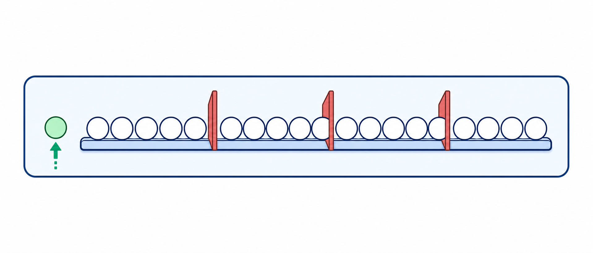
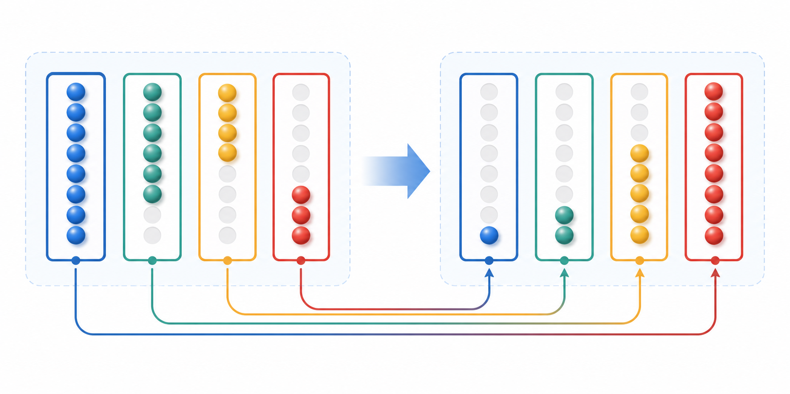
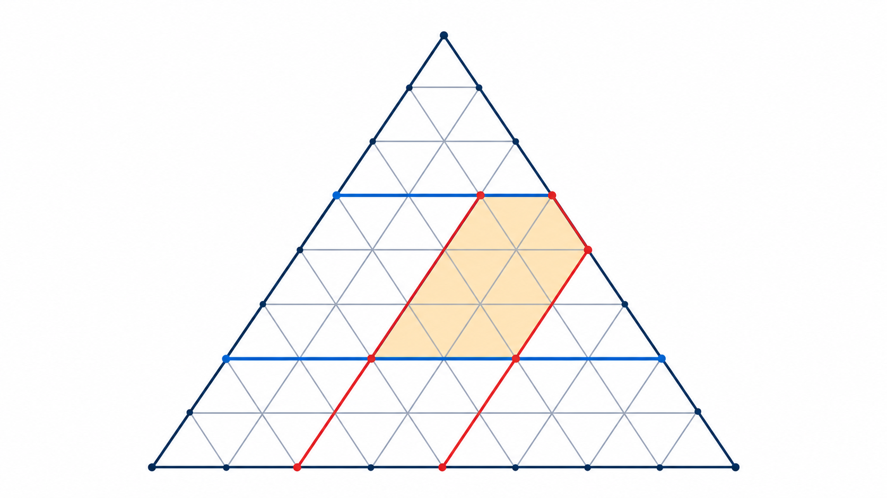
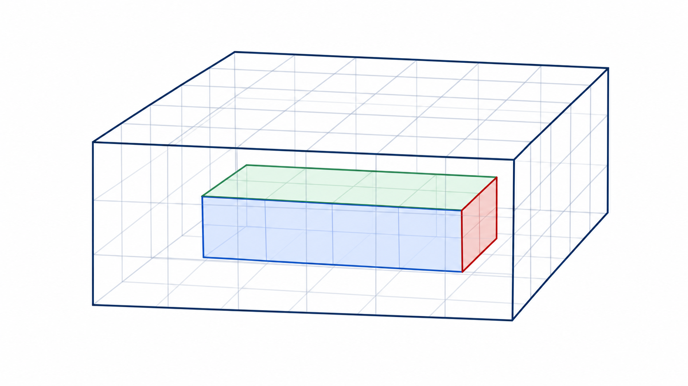
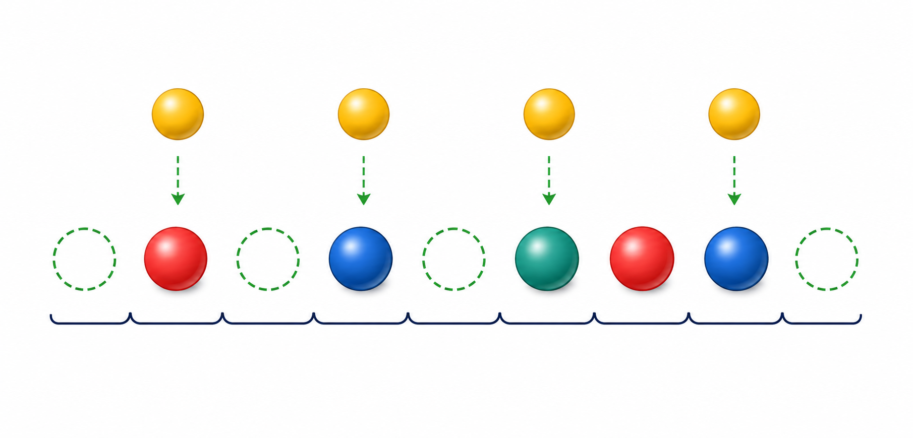

什么是对应计数？面对一个复杂的计数问题，直接数太乱、太多、容易遗漏。聪明的做法是：把它转化成另一个等价但更简单的问题——只要新旧问题之间存在一一对应（每个旧方案恰好对应一个新方案，不多不少），数新问题就等于数旧问题。
核心理念："物 → 数"。把排列物体的任务，转化为排列数字（编码）的任务。例如，5 个球排一行，可以用数字 $1, 1, 2, 2, 2, 3, 3, 3, 3$ 来编码——红色球记 1、蓝色球记 2、黄色球记 3。球的排列问题就变成了数字的排列问题，约束条件也随之翻译。
对应计数的核心是证明一一对应。不能多对一（两个旧方案对应同一个新方案，会少数），也不能一对多（一个旧方案对应多个新方案，会多数）。转化后必须验证：每个旧方案恰好对应一个新方案，反之亦然。
教学建议：本讲建议 $2 \sim 3$ 课时。重点不是背公式，而是理解"为什么可以这么转化"——转化后多了什么、少了什么、为什么一一对应。
适用场景：把 $n$ 个相同的物品分给 $k$ 个不同的组，每组至少分到若干个。用 $k-1$ 块"隔板"插入 $n$ 个物品之间的间隙，隔板的不同插法对应不同的分配方案。
将 $n$ 个"1"排成一排，插入 $k-1$ 块隔板，分成 $k$ 段。每段对应一个组的数量。
正整数解（每组 $\geq 1$）：$x_1 + x_2 + \cdots + x_k = n$ 的正整数解个数为 $C_{n-1}^{k-1}$。
自然数解（每组 $\geq 0$）：$x_1 + x_2 + \cdots + x_k = n$ 的自然数解个数为 $C_{n+k-1}^{k-1}$。
有下界（每组 $\geq m_i$）：令 $y_i = x_i - m_i$，转化为自然数解问题。
分析：四位数的四个数字 $d_1 d_2 d_3 d_4$ 满足 $d_1 + d_2 + d_3 + d_4 = 11$，其中 $1 \leq d_1 \leq 9$，$0 \leq d_2,d_3,d_4 \leq 9$。
先处理首位：令 $e_1=d_1-1$，则 $e_1+d_2+d_3+d_4=10$。如果暂时不管上界，非负整数解有 $C_{10+4-1}^{4-1}=C_{13}^{3}=286$ 个。

再排除越界：这里不能忽略数字上界。因为 $e_1$ 最大只能为 8（对应 $d_1 \leq 9$），而 $d_2,d_3,d_4$ 最大只能为 9。
答案：279 个。
分析：有下界约束 $z \geq 3$。令 $z' = z - 3 \geq 0$，则方程变为 $x + y + z' = 12$，其中 $x, y, z' \geq 0$，是自然数解问题。
用隔板法：12 个"1" + 2 块隔板 = 14 个位置选 2 个放隔板。
答案：91 个。
适用场景：选取的数之间有差值约束（如 $a - b > 1$、$b - c > 2$ 等），直接选难以计数。把每个选中的数"打包"——连同它后面应跳过的数一起看作一个整体——转化为无约束的选取问题。
分析：约束意味着相邻选数之间至少要跳过若干个数。用打包法：
$a - b > 1$ → $a$ 和 $b$ 之间至少跳过 1 个数，把 $a$ 和它后面跳过的 1 个数"打包"在一起。
$b - c > 2$ → $b$ 和 $c$ 之间至少跳过 2 个数，把 $b$ 和它后面跳过的 2 个数"打包"。
$c - d > 3$ → $c$ 和 $d$ 之间至少跳过 3 个数，把 $c$ 和它后面跳过的 3 个数"打包"。
打包后：$a$ 占 $1+1=2$ 格，$b$ 占 $1+2=3$ 格，$c$ 占 $1+3=4$ 格，$d$ 占 1 格。总共占用 $2+3+4+1=10$ 格。
原来有 16 个数，打包后等效于从 $16 - 6 = 10$ 个位置中选 4 个位置放 $a, b, c, d$（因为打包"吃掉"了 $1+2+3=6$ 个额外位置）。
答案：210 种。
适用场景：数字和很大（接近最大值）时，直接用隔板法需要排除大量越界情况。此时令 $d_i' = 9 - d_i$，把"大和"问题转化为"小和"问题。
四位数 $d_1 d_2 d_3 d_4$ 的数字和为 $S$。令 $d_i' = 9 - d_i$，则 $d_1' + d_2' + d_3' + d_4' = 36 - S$。当 $S$ 很大时，$36 - S$ 很小，问题变简单。而且 $d_1 \geq 1 \Leftrightarrow d_1' \leq 8$，$d_i \leq 9 \Leftrightarrow d_i' \geq 0$，约束自动满足。
分析：直接做 $d_1+d_2+d_3+d_4=30$，$d_1 \geq 1$，$d_i \leq 9$，隔板法要排除大量越界。用补数转化。
令 $d_i' = 9 - d_i$，则 $d_1'+d_2'+d_3'+d_4' = 36-30 = 6$。其中 $d_i' \geq 0$，且 $d_1 \geq 1 \Rightarrow d_1' \leq 8$（自动满足，因为 $d_1' \leq 6$）。

现在只需数 $d_1'+d_2'+d_3'+d_4' = 6$ 的自然数解个数。
答案：84 个。
分析："数字和 $\leq 10$" 不方便直接数（要枚举 $S=1,2,\ldots,10$ 再求和）。巧妙转化：在四位数后面"虚增"一个第五位 $d_5$，使得 $d_1+d_2+d_3+d_4+d_5 = 10$。
这样，"数字和 $\leq 10$" 就变成了"五位数数字和 $= 10$"的五位数个数。每个四位数 $\to$ 添加一个补足位 $d_5 = 10 - S$（$d_5 \geq 0$），构成五位数 $d_1 d_2 d_3 d_4 d_5$（首位 $d_1 \geq 1$）。
用隔板法：10 个"1"，首位固定一个"1"（$d_1 \geq 1$），剩 9 个"1"+4 块隔板 = 13 个位置选 4。
减 1 是因为存在 1 种不合法方案：$d_1 = 10$，$d_2 = d_3 = d_4 = d_5 = 0$。此时 $d_1 = 10$ 不是合法数字（数字只能 $0 \sim 9$），对应的"四位数"首位为 10，不合法。其余 714 种方案中 $d_1 \leq 9$ 全部合法。
答案：714 个。
适用场景：几何图形的计数问题——平行四边形、三角形、长方体等。核心思路是建立"图形 $\leftrightarrow$ 选点"的一一对应，把数图形变成数组合。
分析：三角网格中有 3 组平行线（左斜、右斜、水平）。每个平行四边形由两组平行线确定——从 3 组中选 2 组，再从每组中选 2 条线。

对于 $n$ 层三角形，每组有 $n+1$ 条线。从 3 组中选 2 组（共 $C_3^2 = 3$ 种），再从每组的 $n+1$ 条线中选 2 条：
以 $n = 6$ 为例：$3 \times C_7^2 \times C_7^2 = 3 \times 21 \times 21 = 3 \times 441 = 1323$。
教材中的解法分三步：选 2 组方向线 → 每组选 2 条 → 对应唯一平行四边形。也可以用"对角线法"——每个平行四边形有 2 条对角线，4 个端点唯一确定。
分析：每个长方体由长、宽、高三个方向各选两条平行线确定。$a \times b \times c$ 的网格中，长方向有 $a+1$ 条线，宽方向有 $b+1$ 条线，高方向有 $c+1$ 条线。

总长方体数（含单位正方体）：
正方体数：边长 1、2、3 的正方体。
边长 1：$5 \times 4 \times 3 = 60$；边长 2：$4 \times 3 \times 2 = 24$；边长 3：$3 \times 2 \times 1 = 6$。共 $60+24+6=90$。
非正方体的长方体：$900 - 90 = 810$。
答案：810 个。
第一步：确定多边形。$\dfrac{n(n-3)}{2} = 20 \Rightarrow n(n-3)=40 \Rightarrow n=8$（八边形）。
第二步：分类对应。三角形由 3 个顶点确定，但顶点可以是原八边形的顶点，也可以是对角线在内部的交点。按顶点来源分类：
| 类型 | 顶点构成 | 计数 |
|---|---|---|
| ① | 3 个原顶点 | $C_8^3 = 56$ |
| ② | 2 个原顶点 + 1 个内交点 | 每个内交点由 4 个顶点的 2 条对角线确定 → $4 \times C_8^4$ |
| ③ | 1 个原顶点 + 2 个内交点 | $5 \times C_8^5$ |
| ④ | 3 个内交点 | $C_8^6$ |
解释：1 个内交点需要 2 条对角线交叉，即需要 4 个顶点。2 个内交点需要 5 个顶点。3 个内交点需要 6 个顶点。
答案：644 个。
分析："物→数"转化：红球记 1，蓝球记 2，黄球记 3。约束"黄球不相邻"变为"数字 3 不相邻"。
第一步：排红球和蓝球。5 个球（2 红 + 3 蓝）排一排，共 $C_5^2 = 10$ 种（选 2 个位置放红球）。
第二步：插空法放黄球。5 个球排好后形成 6 个间隙（含两端），选 4 个放黄球：$C_6^4 = 15$。

答案：150 种。
分析：题目已经指定排列为（奇、偶、奇、偶、奇），所以只需数这一种模式：$a,c,e$ 为奇数，$b,d$ 为偶数。
把偶数转成奇数：令 $b'=b-1$，$d'=d-1$。因为 $b,d$ 是偶数，$b',d'$ 都是奇数，且都在 $\{1,3,5,7,9,11,13\}$ 中。
把奇数按从小到大编号：$1,3,5,\ldots,15$ 分别记作 $1,2,\ldots,8$。设 $a,b',c,d',e$ 的编号依次为 $x_1,x_2,x_3,x_4,x_5$。
其中两个"小于等于"来自 $a 消掉弱不等号：令 于是 $1 \leq y_1 答案：252 种。
分析："1 不连续超过 2 次"→ 把连续的"11"看作一个整体（包）。于是元素变为：单个"1"、包"11"、"2"。
约束：2 不相邻 → 2 之间至少有一个 1 或 11。1 和 11 不能拼接出"111"（即"1"和"11"不能相邻，否则变成 3 个连续 1）。
按 2 的个数分类：
情况一：7 个 2。需 6 个"1"放在 2 之间，每个间隙放 1 个：$21212121212$。只有 1 种。
情况二：6 个 2 + 8 个 1。8 个 1 分成若干组（每组 1 个或 2 个），插入 2 之间的 5 个间隙和两端。分组方式：
小计：$7 + 30 + 10 = 47$ 种。
情况三：5 个 2 + 10 个 1。5 个 2 形成 6 个间隙（4 个内部必须非空），每组放 1 个或 2 个"1"，分组方式：
小计：$15 + 2 = 17$ 种。
为什么不含 4 个 2 或更少？4 个 2 时需要 12 个 1，但 5 个间隙每组最多放 2 个"1"，总共最多 $5 \times 2 = 10 < 12$，不可能。8 个 2 时需要 4 个 1，但 7 个内部间隙各需至少 1 个"1"，至少要 7 个，也不够。所以仅 $k = 5, 6, 7$ 有解。
答案：65 个。
| 编号 | 题型 | 方法提示 | 难度 |
|---|---|---|---|
| 1 | 2 红 2 黄 3 蓝球排列 | 不全相同时元素排列 + 隔板 | ⭐⭐ |
| 2 | 4 鸡蛋 2 鸭蛋，鸭蛋不相邻 | 插空法 | ⭐⭐ |
| 3 | 3 个羽毛球各 3 球，抽取顺序 | 对应排列 + 约束 | ⭐⭐⭐ |
| 4 | 足球 6:4，甲始终领先 | Catalan 数 $C_4 = 14$ | ⭐⭐⭐ |
| 5 | $x+y+z+t=15$ 正整数解 | 隔板法 $C_{14}^3 = 364$ | ⭐⭐ |
| 6 | $x+y+z+2t=20$ 自然数解 | 分类讨论 $t$ 的奇偶 | ⭐⭐⭐ |
| 7 | 数字和为 20 的四位数 | 补数转化 $36-20=16$ | ⭐⭐⭐ |
| 8 | 八进制四位数，数字和 $\leq 20$ | 虚增一位 + 隔板 | ⭐⭐⭐⭐ |
| 9 | 10 人排队，插入 3 人有间距 | 打包法 | ⭐⭐⭐⭐ |
| 10 | 从 {6,7,8,15} 取数和为 100 或 106 | 补数转化 + 对应 | ⭐⭐⭐⭐⭐ |
忘记验证一一对应。转化后必须验证：旧问题的每个方案恰好对应新问题的一个方案，不多不少。如果存在"多对一"或"一对多"，计数结果就错了。
隔板法的正整数解与自然数解混淆。$x_1+\cdots+x_k=n$：正整数解（每组 $\geq 1$）用 $C_{n-1}^{k-1}$；自然数解（每组 $\geq 0$）用 $C_{n+k-1}^{k-1}$。口诀："正整数减一，自然数加一"——指公式中 $n$ 分别减 1 或加 $k-1$。
补数转化时忘记首位约束。$d_i' = 9 - d_i$ 后，$d_1 \geq 1$ 变成 $d_1' \leq 8$。通常自动满足（因为补数和很小），但必须验证。如果不满足，需要单独处理。
几何计数时重复或遗漏。三角形分类必须覆盖所有可能的顶点组合，不能重复计算同一三角形。用"需要几个原顶点"来分类，确保不重不漏。
打包法中"吃掉"的位置算错。$a - b > m$ 意味着 $a$ 和 $b$ 之间至少跳过 $m$ 个数。打包时 $a$ 额外占用 $m$ 个位置，不是 $m-1$ 个。
隔板法：$n$ 个 1 排一排，$k-1$ 块板插间隙。正整数 $C_{n-1}^{k-1}$，自然数 $C_{n+k-1}^{k-1}$。
打包法：差值约束变体积，$a-b>m$ → $a$ 多占 $m$ 格。打包后无约束，直接组合数。
补数转化：大和变小和，$d_i' = 9-d_i$。$S \to 36-S$，大化小真好算。
分类对应：数图形 → 数组合。平行四边形 = 选 2 组线 × 各选 2 条；三角形 = 按原顶点个数分类。
$C_r^r + C_{r+1}^r + C_{r+2}^r + \cdots + C_{r+m}^r = C_{r+m+1}^{r+1}$
用途："数字和 $\leq S$" → "数字和 $= S+1$"（虚增一位），把求和变成单点。
对应计数的本质是"换一个等价的角度来数"。面对复杂问题，不要硬数——寻找一个一一对应的、更简单的等价问题。四大方法各有侧重：隔板法处理"相同物分配"，打包法处理"差值约束"，补数转化处理"大和变小和"，分类对应处理"几何计数"。
第一步：识别题型——是分配问题？差值约束？数字和？几何计数？
第二步：选择转化方法——隔板 / 打包 / 补数 / 分类。
第三步：验证一一对应——每个旧方案恰好对应一个新方案。
第四步：在新问题中计算——通常归结为组合数 $C_n^k$。
第五步：处理边界——首项非零、数字不超过 9、下界约束等。